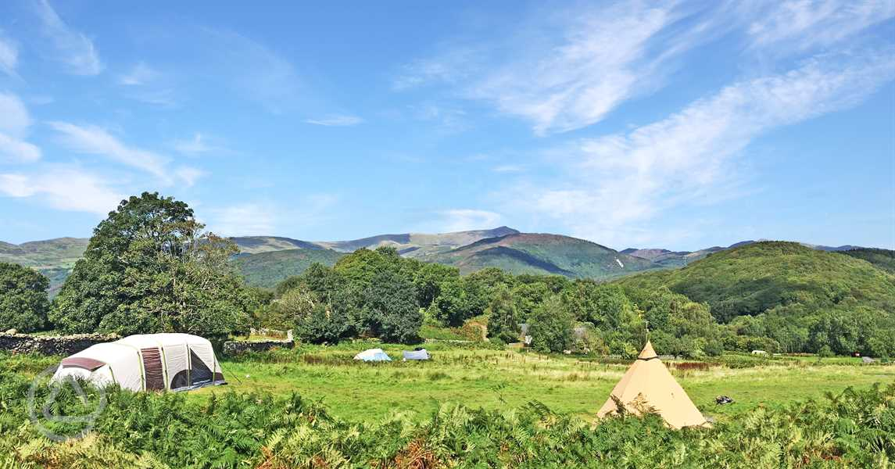
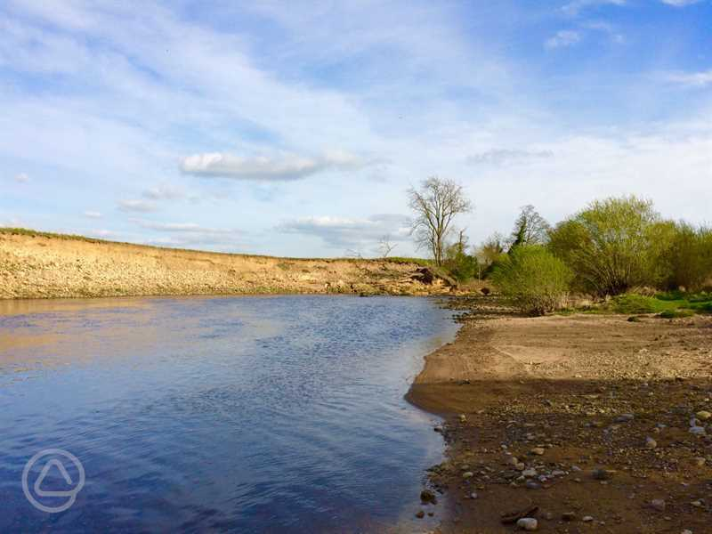

Red Squirrel Campsite
Glencoe, Highlands, Scotland
Experience the magic of camping in Glencoe, where you'll immerse yourself in Scotland's rich wildlife and awe-inspiring landscapes. With majestic mountain vistas and serene riverside spots, this is a place of true natural beauty. Choose from a selection of over 100 grass pitches, nestled amidst the unspoiled surroundings. Some of these pitches even border the tranquil River Coe, offering a picturesque setting for your campervan or tent, ensuring an authentic camping experience. For those who prefer a hassle-free camping experience, we offer charming bell tents named Squirrels Drey and Bidean. These spacious 5m bell tents come equipped with a table, four chairs, a wood-fired stove, a kettle, crockery, and tea and coffee facilities. Please note that guests are required to bring their own bedding and linen. Our rural location is a perfect base for exploring the Highlands, with a wealth of activities nearby, including mesmerizing waterfalls, scenic trails, and the UK's highest peak, Ben Nevis, just 40 minutes away. At Red Squirrel Campsite, we embrace the spirit of camping with campfires and BBQs allowed. To preserve the natural beauty of our site, please refrain from creating your own fire pit and keep personal fire pits off the grass. We're a pet-friendly site, and dogs are welcome at no additional cost. Red Squirrel Campsite welcomes visitors year-round in 2023 and 2024, ensuring you can enjoy the beauty of Glencoe whenever it suits you.

Drybeck Farm
Carlisle, Cumbria & Lake District
Located just a short drive, less than half an hour from Carlisle, this riverside camping and glamping site offers the perfect escape into nature's embrace. While its proximity to Carlisle is convenient, the true allure lies in the surrounding natural beauty. For those seeking adventure, take a refreshing dip in the crystal-clear waters of the River Eden, or if you prefer to keep your feet dry, explore the stunning hiking trails that the Lake District has to offer. Our serene farm meadow hosts only ten camping pitches, each situated just a stone's throw away from the river. There's ample space for the kids to frolic and play. Every camping pitch includes a personal fire pit, perfect for cozy evening campfires. Plus, you'll find eco-friendly facilities nearby for added convenience. If you're in the mood for something unique, we offer a variety of quirky glamping options. Choose from cosy, exquisitely furnished glamping cabins to authentic gypsy caravans. Each glamping accommodation comfortably accommodates three to four guests and features a fully equipped kitchen, either indoors or outdoors. To elevate your experience, each unit boasts a private wood-fired hot tub for you to unwind in. Additionally, glampers have exclusive access to their own private composting toilet and hot shower facilities. For a fresh take on traditional pods, check out The Wigloo and The Lantern House. These unique wooden cabins feature skylights, creating a light and airy atmosphere with excellent insulation. Drawing inspiration from the rich Cumbrian farming heritage, you can opt for one of our two shepherd's wagons, The Herdwick and The Swaledale. The Croglin Yurt is a cosy haven filled with vintage and upcycled touches, promising a glamorous glamping experience. For a romantic retreat for two, choose Evelyn, the gypsy caravan, perched right on the riverbanks in a secluded spot. While soaking in the wood-fired outdoor Japanese bath hot tub, you might even catch a glimpse of the elusive otter! We're a pet-friendly site, welcoming well-behaved dogs to join your outdoor adventures. Camping season runs from April 1st to September 30th, while glamping is available from mid-February until late December. Come and experience the magic of camping and glamping by the riverside.
Graig Wen
Dolgellau, Gwynedd, Wales
Discover this serene and picturesque site nestled within Snowdonia National Park, offering an exceptional location near the charming towns of Barmouth and Dolgellau. With its panoramic views overlooking the stunning Mawddach Estuary, one of Wales' most captivating natural wonders, you'll be treated to breathtaking vistas at every turn. For outdoor enthusiasts, the location is a dream come true. Explore the nearby beach by bike or embark on scenic walks that start right at your doorstep, leading you to mesmerizing waterfalls, enchanting woodlands, and invigorating hikes into the hills. Our site caters to a variety of preferences. You'll find a sheltered hardstanding area equipped with electric hook-ups, ideal for accommodating six caravans. This area is conveniently located near the showers and holiday cottages. For those yearning to disconnect and immerse themselves in nature, we offer the opportunity to pitch your tent near the estuary. Here, you can stargaze around a campfire in a back-to-nature setting. The lower field pitches are a 5-10 minute stroll from the car parking area, and we provide wheelbarrows to make transportation hassle-free. We also provide glamping accommodations, including spacious and cozy yurts, a meticulously crafted shepherd's hut, two charming wagons, and a delightful bell tent. Our yurts are crafted from homegrown ash trees in our woodland and handcrafted by skilled yurt-makers. The shepherd's hut and wagons are available for most of the year and offer comfort and insulation. The wagons feature instant heating at the touch of a switch, with one even boasting an en suite toilet and shower. The shepherd's hut includes a welcoming wood-burning stove and ample space to accommodate a couple or a family of four. For a truly wild experience, consider the Idris Yurt, set in a secluded woodland area with its own campfire and composting toilet, surrounded by magnificent oak trees. Hot showers are just a short walk away. The Tommy Yurt is situated alongside two other yurts and the shepherd's hut in a private glade separate from the rest of the campsite. Well-behaved dogs on leads are more than welcome to join your outdoor adventures. Our camping season for tents in the lower fields runs from May to September, while touring pitches and glamping options are available from March to December. Come and experience the natural beauty of Snowdonia at our tranquil site.
Sleningford Watermill Caravan and Camping Park
Ripon, Yorkshire
Nestled on a picturesque 14-acre site alongside the enchanting River Ure, Sleningford Watermill Caravan and Camping Park offers a tranquil retreat with a touch of history. Situated within easy reach of the captivating Yorkshire Dales and the Nidderdale Area of Outstanding Beauty, our park is perfectly positioned for nature enthusiasts, walkers, cyclists, and water lovers. Our spacious grass pitches welcome a variety of camping options, including tents, caravans, campervans, motorhomes, and RVs, with room for up to six guests per pitch. On one side of the island, you'll find 43 non-electric pitches, while two exclusive electric pitches stand alone at the front of the mill. Across the river from the watermill, you'll discover an additional 45 grass pitches, all equipped with electric hook-ups. These pitches are distributed across areas like Watermill, Horseshoe, Oak Tree, Long Meadow, and Mole End, each boasting a minimum width of 10 meters and varying lengths. For guests with trailer tents, caravans, campervans, motorhomes, and RVs, we offer electric hardstanding pitches, including a secluded pitch within our courtyard and seven riverside pitches near the amenity block, offering breathtaking river views. For those seeking a self-catering option, our well-appointed holiday flat can comfortably accommodate up to four guests (excluding pets). Our park is a haven for wildlife, providing ample opportunities for children to engage in nature-related activities during their stay. Additionally, we offer seasonal pitches for caravans and motorhomes in two designated areas on-site. If you fancy a BBQ, feel free to bring one along; they are welcome on-site as long as they are raised from the ground. However, please note that open fires are not permitted to preserve the natural environment. We're a pet-friendly park, allowing a maximum of three dogs per pitch for an additional fee. Please ensure your furry companions are kept on a lead at all times. Sleningford Watermill Caravan and Camping Park opens its doors from April 1st to October 30th, ensuring you can enjoy the beauty of the outdoors during the camping season.

Wolf Meadows Farm
High Bickington, Umberleigh, Devon
Nestled near Umberleigh, this peaceful farm spans an impressive 30 acres of lush meadows and enchanting woodland. Here, a harmonious blend of traditional farming practices and sustainability principles creates an environmentally friendly haven. Wolf Meadows Farm is enveloped by hedgerows adorned with vibrant flowers and bountiful berry bushes, alongside ancient woodlands that beckon you to reconnect with nature. The farm is home to rare and endangered Highland cattle, a proud cockerel, and free-ranging hens that lay the finest eggs for your morning breakfast. All camping pitches are thoughtfully designed without electric hook-ups. You have the option to spread out across the sprawling meadow, bordered by the serene River Taw. For those seeking a more intimate riverside experience, we offer a limited number of riverside meadow pitches. Here, you can bask in the soothing sounds of the clear water, surrounded by ducks, geese, salmon, and perhaps even swans. A secluded section of wild bluebell woodland presents another unique camping opportunity. Shy deer occasionally grace us with their presence, and the area teems with diverse wildlife and vibrant wildflowers. For an even more immersive experience, we have three pitches within a wooded section that stretches down to the riverbank. From here, you can dip your toes in the water, observe the daily routines of otters, or drift off to sleep to the gentle melodies of birdsong. Our farm also boasts two eco-friendly glamping barrel pods inspired by Viking design. These cozy pods comfortably sleep four guests, with two double bedrooms each. They occupy secluded spots on the site, offering shared facilities within easy reach and an outdoor BBQ area for delightful campfires. Please note that the site is accessed via a narrow and winding road, but our friendly staff are always available to assist you with your arrival. Wolf Meadows Farm welcomes guests from May 1st to October 31st. Join us for an unforgettable escape into the heart of nature.